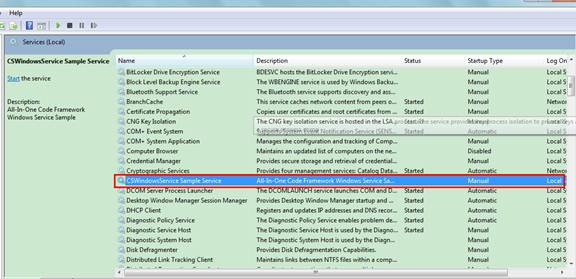
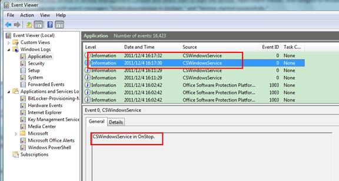

A basic Windows service in C# (CSWindowsService)
WINDOWS SERVICE (CSWindowsService)
Introduction
This code sample demonstrates creating a very basic Windows Service application in Visual C#. The example Windows Service logs the service start and stop information to the Application event log, and shows how to run the main function of the service in a thread pool worker thread. You can easily extend the Windows Service skeleton to meet your own business requirement.
Running the Sample
The following steps walk through a demonstration of the Windows Service sample.
Step1. After you successfully build the sample project in Visual Studio 2010, you will get a service application: CSWindowsService.exe.

Step2. Run Visual Studio 2010 Command Prompt as administrator, navigate to the output folder of the sample project, and enter the following command to install the service.
InstallUtil.exe CSWindowsService.exe
The service is successfully installed if the process outputs:

If you do not see this output, please look for the CSWindowsService.InstallLog file in the ouput folder, and investigate the cause of failure.
Step3. Open Service Management Console (services.msc). You should be able to find "CSWindowsService Sample Service" in the service list.

Step4. Right-click the CSWindowsService service in Service Management Console and select Start to start the service. Open Event Viewer, and navigate to Windows Logs / Application. You should be able to see two events from CSWindowsService with event messages: "CSWindowsService in OnStart." and "Service started successfully."

Right-click the service in Service Management Console and select Stop to stop the service. You will see two new events from CSWindowsService in Event Viewer / Windows Logs / Application with messages: "CSWindowsService in OnStop" and "Service stopped successfully".

Step5. To uninstall the service, enter the following command in Visual Studio 2010 Command Prompt running as administrator.
InstallUtil /u CSWindowsService.exe
If the service is successfully stopped and removed, you would see this output:

Setup and Removal
In the Development Environment
A. Setup
Run the command "Installutil.exe CSWindowsService.exe" in an elevated Visual Studio 2010 Command Prompt. It installs CSWindowsService.exe as a service to the local service control manager database.
B. Cleanup
Run the command "Installutil.exe /u CSWindowsService.exe" in an elevated Visual Studio 2010 Command Prompt. It stops and removes the CSWindowsServiceservice from the local service control manager database.
In the Deployment Environment
A. Setup
Install CSWindowsServiceSetup(x86).msi, the output of the CSWindowsServiceSetup(x86) setup project, on a x86 operating system. If the target platform is x64, install CSWindowsServiceSetup(x64).msi outputted by the CSWindowsServiceSetup(x64) setup project.
B. Removal
Uninstall CSWindowsServiceSetup(x86).msi, the output of the CSWindowsServiceSetup(x86) setup project, on a x86 operating system. If the target platform is x64, uninstall SWindowsServiceSetup(x64).msi outputted by the CSWindowsServiceSetup(x64) setup project.
Using the Code
A. Creating Windows Service
http://msdn.microsoft.com/en-us/library/aa983583.aspx
Step1. In Visual Studio 2010, add a new Visual C# / Windows / Windows Service project named CSWindowsService. The project template automatically adds a component class named Service1 that inherits from System.ServiceProcess.ServiceBase.
Step2. Rename the default Service1 to the name "SampleService". Open the service in designer and set the ServiceName property to be CSWindowsService.
Step3. To add custom event log functionality to your service, drag and drop an event log component from toolbox to the design view, and set its Log property to be Application, and its Source to be CSWindowsService. The event log component will be used to log some messages to the Application log.
Step4. To define what occurs when the service starts and stops, in the Code Editor, locate the OnStart and OnStop methods that were automatically overridden when you created the project, and write code to determine what occurs when the service starts running. In this example, we log the service start and stop information to the Application log, and show how to run the main function of the service in a thread pool worker thread. SampleService.OnStart, which is executed when the service starts, calls EventLog.WriteEntry to log the service-start information. And it calls ThreadPool.QueueUserWorkItem to queue the main service function (SampleService.ServiceWorkerThread) for execution in a worker thread.
NOTE: A service application is designed to be long running. Therefore, it usually polls or monitors something in the system. The monitoring is set up in the OnStart method. However, OnStart does not actually do the monitoring. The OnStart method must return to the operating system after the service's operation has begun. It must not loop forever or block. To set up a simple monitoring mechanism, one general solution is to create a timer in OnStart. The timer would then raise events in your code periodically, at which time your service could do its monitoring. The other solution is to spawn a new
thread to perform the main service functions, which is demonstrated in this code sample.
protected override void OnStart(string[] args)
{
// Log a service start message to the Application log.
this.eventLog1.WriteEntry("CSWindowsService in OnStart.");
// Queue the main service function for execution in a worker thread.
ThreadPool.QueueUserWorkItem(new WaitCallback(ServiceWorkerThread));
}
protected override void OnStart(string[] args)
{
// Log a service start message to the Application log.
this.eventLog1.WriteEntry("CSWindowsService in OnStart.");
// Queue the main service function for execution in a worker thread.
ThreadPool.QueueUserWorkItem(new WaitCallback(ServiceWorkerThread));
}
SampleService.OnStop, which is executed when the service stops, calls EventLog.WriteEntry to log the service-stop information. Next, it sets the member varaible 'stopping' as true to indicate that the service is stopping and waits for the finish of the main service function that is signaled by the 'stoppedEvent' event object.
protected override void OnStop()
{
// Log a service stop message to the Application log.
this.eventLog1.WriteEntry("CSWindowsService in OnStop.");
// Indicate that the service is stopping and wait for the finish
// of the main service function (ServiceWorkerThread).
this.stopping = true;
this.stoppedEvent.WaitOne();
}
protected override void OnStop()
{
// Log a service stop message to the Application log.
this.eventLog1.WriteEntry("CSWindowsService in OnStop.");
// Indicate that the service is stopping and wait for the finish
// of the main service function (ServiceWorkerThread).
this.stopping = true;
this.stoppedEvent.WaitOne();
}
SampleService.ServiceWorkerThread runs in a thread pool worker thread. It performs the main function of the service such as the communication with client applications through a named pipe. In order that the main function finishes gracefully when the service is about to stop, it should periodically check the 'stopping' varaible. When the function detects that the service is stopping, it cleans up the work and signal the 'stoppedEvent' event object.
private void ServiceWorkerThread(object state)
{
// Periodically check if the service is stopping.
while (!this.stopping)
{
// Perform main service function here...
Thread.Sleep(2000); // Simulate some lengthy operations.
}
// Signal the stopped event.
this.stoppedEvent.Set();
}
private void ServiceWorkerThread(object state)
{
// Periodically check if the service is stopping.
while (!this.stopping)
{
// Perform main service function here...
Thread.Sleep(2000); // Simulate some lengthy operations.
}
// Signal the stopped event.
this.stoppedEvent.Set();
}
B. Adding Installer to the service
http://msdn.microsoft.com/en-us/library/aa984263.aspx
Step1. Open SampleService.cs in Designer, and click the background of the designer to select the service itself, instead of any of its contents. With the designer in focus, right-click, and then click Add Installer. By default, a component class that contains two installers is added to your project. The component is named ProjectInstaller, and the installers it contains are the installer for your service and the installer for the service's associated process.
Step2. In Design view for ProjectInstaller, click serviceInstaller1. In the Properties window, set the ServiceName property to CSWindowsService. Set the DisplayName property to CSWindowsService Sample Service. In the designer, click serviceProcessInstaller1. Set the Account property to LocalService. This will cause the service to be installed and to run on a local service account.
Security Note: In this code sample, the service is configured to run as LocalService, instead of LocalSystem. The LocalSystem account has broad permissions. Use the LocalSystem account with caution, because it might increase your risk of attacks from malicious software. For tasks that do not need broad permissions, consider using the LocalService account, which acts as a non-privileged user on the local computer and presents anonymous credentials to any remote server.
C. Creating a setup project for the service to facilitate the deployment
Step1. Add a new Other Project Types / Setup and Deployment Projects / Setup Project named CSWindowsServiceSetup.
Step2. To add CSWindowsService.exe to the setup project, right-click CSWindowsServiceSetup, point to Add, and then click Project Output. Select CSWindowsService in the Project box and choose Primary Output from the list. A project item for the primary output of CSWindowsService is added to the setup project.
Step3. By default, the target platform of the setup project is x86. If you want to build a setup that targets the x64 platform, click the setup project, and choose "x64" as the TargetPlatform in the Properties dialog.
Step4. Now add a custom action to install the CSWindowsService.exe file. Right-click the setup project in Solution Explorer, point to View, and then click Custom Actions. In the Custom Actions editor, right-click the Custom Actions node and click Add Custom Action. Double-click the Application Folder in the list to open it, select Primary Output from CSWindowsService (Active), and click OK. The primary output is added to all four nodes of the custom actions �� Install, Commit, Rollback, and Uninstall. In Solution Explorer, right-click the CSWindowsServiceSetup project and click Build.
More Information
�� MSDN: Windows Service Applications